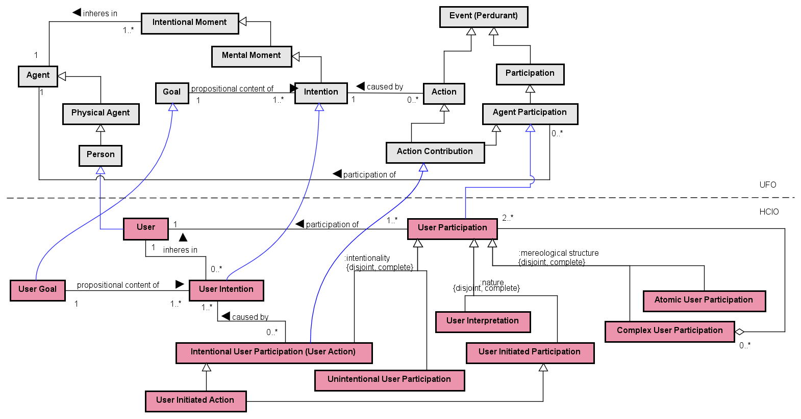

Networked ontologies used by HCIO:
| Ontology | Relation | Integration Level |
| UFO - Unified Foundational Ontology | ||
| SPO - Software Process Ontology | ||
| UFO - Unified Foundational Ontology |
Figure 1 presents the packages of the SysSwO view HCIO.
Figure 1. SysSwO view HCIO.
Figure 2 presents the packages of the HCIO Modularization.

Figure 2. HCIO Modularization.
Figure 3 presents the packages of the UFO-View HCIO.

Figure 3. UFO-View HCIO.
Figure 4 presents the conceptual model of the Interactive Computer System subontology.

Figure 4. Interactive Computer System conceptual model.
Figure 5 presents the conceptual model of the User subontology.

Figure 5. User conceptual model.
Figure 6 presents the conceptual model of the HC Interaction subontology.

Figure 6. HC Interaction conceptual model.
The following table shows the definitions for HCIO concepts.
| Concept | Definition |
| Atomic User Participation
|
Single User Participation. E.g., user touching her finger to unlock her mobile phone by using her fingerprint; user clicking a button.
|
| Complex Interactive Computer System
|
Interactive Computer System composed of others Interactive Computer System. E.g., IoT in a smart home. Adapted from (ISO 9241-210, 2010) (ISO 9241-11, 2018)
|
| Complex User Participation
|
Participation composed of two or more User Participations. E.g., user typing her password and then answering security questions to log in the e-mail system.
|
| Human-Computer Interaction
|
An exchange of information (i.e., communication) between a User and an Interactive Computer System via the User Interface. E.g., user touching her finger to unlock her mobile phone by using her fingerprint and the mobile phone system showing a message informing that the fingerprint was not recognized; user entering a room, in a smart home, which automatically turns on the light. Adapted from (ISO 9241-210, 2010)
|
| Input Equipment
|
Hardware Equipment used to receive and transmit information or data from a User (input). E.g.: keyboard, mouse, sensors. Adapted from (Dix et al., 2004)
|
| Intentional User Participation (User Action)
|
User participation intentionally performed. E.g., user touching her finger to unlock her mobile phone by using her fingerprint; user clicking the send button to send an e-mail.
|
| Interactive Computer System
|
Computer System that combines User Interface, Computer Machine and Loaded Software System Copies, used to process, transform, store, display or transmit information or data by receiving input, and communicating output to Users. E.g., a desktop computer, its monitor, keyboard, mouse and software systems loaded in the computer (operational system, browser, text editor, etc.); smart watch; smart mobile phone. Adapted from (ISO 9241-210, 2010) |
| Interactive Computer System Participation
|
The participation of an Interactive Computer System in a Human-Computer Interaction. E.g., the participation of the mobile phone system in the human-computer interaction in which the user touches her finger to unlock her mobile phone by using her fingerprint and the mobile phone system shows a message informing that the fingerprint was not recognized; the participation of the smart watch in the human-computer interaction in which the user uses the smart watch to monitor her heart pulse.
|
| Interactive Software System
|
Software system that includes, among other programs, User Interface Programs. E.g., a home banking system and its graphical programs that deals with user interface aspects.
|
| Loaded Interactive Software System Copy
|
Loaded Software System Copy that is the materialization of an Interactive Software System. E.g., the copy of the home banking system loaded in the computer of a certain user.
|
| Loaded User Interface Program Copy
|
Loaded Program Copy that is the materialization of a User Interface Program. E.g., the copy of the programs that deal with interface aspects of the home banking system loaded in the computer of a certain user.
|
| Output Equipment
|
Hardware Equipment used to transmit or display information or data, communicating output to Users. E. g.: Monitor, speaker, etc. Adapted from (Dix et al., 2004)
|
| Unintentional User Participation
|
User participation unintentionally performed. E.g., a user walking and unintentionally giving information about number of steps to a monitoring system loaded in her smart watch; user entering a room, in a smart home, which automatically turns on the light.
|
| User
|
A Person who interacts with (or is expected to interact with) an Interactive Computer System. E.g., a person who uses a home banking system, smart watch or smart mobile phone. Adapted from (ISO 9241-210, 2010)
|
| User Goal
|
The propositional content of something the User wants to achieve (User Intention). E.g., the goal of buying fly tickets to go on vacation.
|
| User Initiated Action
|
Intentional User Action of inputting data or information using an Input Equipment. E.g., user touching her finger to unlock her mobile phone by using her fingerprint; user clicking the send button to send an email.
|
| User Initiated Participation
|
Event in which a User inputs data or information using an Input Equipment. E.g., user touching her finger to unlock her mobile phone by using her fingerprint.
|
| User Input Resulting State
|
A situation achieved as the result of User’s input (data or information) received by means of an Input Equipment. E.g., the user fingerprint captured by the mobile phone system; the button clicked.
|
| User Intention
|
An Intention that inheres in a User, causing him to perform intentional user actions. E.g., the intention to travel on vacation.
|
| User Interface
|
All components of an interactive system (software or hardware) that provide information and controls for the user to accomplish specific tasks with the interactive system. E.g., mouse, keyboard, monitor, sensors and the software that handle them. Adapted from (ISO 9241-210, 2010) (ISO 9241-112, 2017)
|
| User Interface Program
|
Program that deals with aspects related to the User Interface. E.g., the program responsible for the graphical user interface of the component that captures the user fingerprint to unlock a mobile phone.
|
| User Interpretation
|
Event in which a User interprets the system output. E.g., user interpreting a message from the mobile phone system informing that the captured fingerprint was not recognized; user sensing her smart watch vibrate; user hearing the notification sound of new message.
|
| User Observable State
|
A situation (an Observable State) perceivable by Users, typically achieved as the result (output) of a Program Copy Execution, communicated or presented by an Output Equipment. E.g., a message shown in the mobile phone screen informing the user that the captured fingerprint was not recognized, smart watch vibrating; sounds emitted by the mobile phone.
|
| User Participation
|
Event in which the user participates in a Human-Computer Interaction. E.g., user walking and unintentionally giving information about number of steps to a monitoring system loaded in her smart watch; user touching her finger to unlock her mobile phone by using her fingerprint; user interpreting a message from the mobile phone system informing that the captured fingerprint was not recognized.
|
| Atomic User Participation |
| Complex Interactive Computer System |
Complex Interactive Computer System (0..*) <>-- (2..*) Interactive Computer System
| Complex User Participation |
Complex User Participation (0..*) <>-- (2..*) User Participation
| Human-Computer Interaction |
Human-Computer Interaction comunicates user input User Interface
Human-Computer Interaction (1..1) <>-- (1..1) Interactive Computer System Participation
Human-Computer Interaction <>-- (1..1) User Participation
User Interface comunicates system output Human-Computer Interaction
HCI Evaluation (0..*) /evaluates (1..*) Human-Computer Interaction
HCI Quality Characteristic (1..*) inheres in (1..*) Human-Computer Interaction
| Input Equipment |
Input Equipment (1..*) is done using (0..*) User Initiated Participation
User Interface (0..*) <>-- (1..*) Input Equipment
Interactive Computer System (0..*) <>-- (1..*) Input Equipment
| Intentional User Participation (User Action) |
Intentional User Participation (User Action) (0..*) caused by (1..*) User Intention
| Interactive Computer System |
Interactive Computer System <>-- User Interface
Interactive Computer System <>-- Hardware Equipment
Interactive Computer System (0..*) <>-- (1..*) Input Equipment
Interactive Computer System <>-- User Input Resulting State
Interactive Computer System (1..1) has (1..*) Loaded Interactive Software System Copy
Interactive Computer System (1..*) has (0..*) HCI Quality Characteristic
HCI Evaluation (0..*) /evaluates (1..1) Interactive Computer System
Interactive Computer System Participation (0..*) participation of (1..1) Interactive Computer System
Complex Interactive Computer System (0..*) <>-- (2..*) Interactive Computer System
| Interactive Computer System Participation |
Interactive Computer System Participation (0..*) participation of (1..1) Interactive Computer System
Interactive Computer System Participation (1..1) <>-- (0..*) Program Copy Execution
HCI Evaluation (0..*) evaluates (1..*) Interactive Computer System Participation
Human-Computer Interaction (1..1) <>-- (1..1) Interactive Computer System Participation
| Interactive Software System |
Interactive Software System (0..*) constituted of (1..*) User Interface Program
Loaded Interactive Software System Copy (0..*) materialization of (1..1) Interactive Software System
| Loaded Interactive Software System Copy |
Loaded Interactive Software System Copy (0..*) materialization of (1..1) Interactive Software System
Loaded Interactive Software System Copy (1..1) includes (1..*) Loaded User Interface Program Copy
Interactive Computer System (1..1) has (1..*) Loaded Interactive Software System Copy
| Loaded User Interface Program Copy |
Loaded User Interface Program Copy (0..*) materialization of (1..1) User Interface Program
User Interface (1..1) handles (1..*) Loaded User Interface Program Copy
Loaded Interactive Software System Copy (1..1) includes (1..*) Loaded User Interface Program Copy
| Output Equipment |
Output Equipment (1..*) presents (0..*) User Observable State
Output Equipment (1..*) /supports (0..*) User Interpretation
User Interface (0..*) <>-- (1..*) Output Equipment
| Unintentional User Participation |
| User |
User (1..1) participation of (1..*) User Participation
User (0..*) participates in (0..*) HCI Evaluation
User Intention (0..*) inheres in (1..1) User
| User Goal |
User Goal (1..1) propositional content of (1..*) User Intention
User Interpretation (0..*) may evaluate achievement of (0..*) User Goal
User Requirement (0..*) refers to (1..1) User Goal
| User Initiated Action |
| User Initiated Participation |
User Initiated Participation (0..*) causes (0..*) User Interpretation
User Initiated Participation (1..1) brings about (1..1) User Input Resulting State
User Initiated Participation (0..1) /directly causes (0..*) Program Copy Execution
User Interpretation (0..*) directly causes (0..*) User Initiated Participation
Input Equipment (1..*) is done using (0..*) User Initiated Participation
| User Input Resulting State |
User Input Resulting State (0..1) triggers (0..*) Program Copy Execution
User Initiated Participation (1..1) brings about (1..1) User Input Resulting State
Interactive Computer System <>-- User Input Resulting State
| User Intention |
User Intention (0..*) inheres in (1..1) User
Intentional User Participation (User Action) (0..*) caused by (1..*) User Intention
User Goal (1..1) propositional content of (1..*) User Intention
| User Interface |
User Interface <>-- Software Product
User Interface <>-- Hardware Equipment
User Interface comunicates system output Human-Computer Interaction
User Interface shows Observable State
User Interface (0..*) <>-- (1..*) Input Equipment
User Interface (0..*) <>-- (1..*) Output Equipment
User Interface (1..1) handles (1..*) Loaded User Interface Program Copy
User Interface (1..*) /has (0..*) HCI Quality Characteristic
HCI Evaluation (0..*) /evaluates (1..1) User Interface
Interactive Computer System <>-- User Interface
Loaded Program Copy (1..*) handles (0..1) User Interface
Human-Computer Interaction comunicates user input User Interface
| User Interface Program |
User Interface Program (0..*) implements (1..*) Quality Characteristic
Loaded User Interface Program Copy (0..*) materialization of (1..1) User Interface Program
Interactive Software System (0..*) constituted of (1..*) User Interface Program
| User Interpretation |
User Interpretation (0..*) directly causes (0..*) User Initiated Participation
User Interpretation (0..*) may evaluate achievement of (0..*) User Goal
User Interpretation (0..*) interprets (1..1) User Observable State
User Interpretation (0..*) /interprets (1..1) User Observable State
Program Copy Execution (1..1) /directly causes (0..*) User Interpretation
User Observable State (1..1) triggers (0..*) User Interpretation
Output Equipment (1..*) /supports (0..*) User Interpretation
User Initiated Participation (0..*) causes (0..*) User Interpretation
| User Observable State |
User Observable State (1..1) triggers (0..*) User Interpretation
User Interpretation (0..*) interprets (1..1) User Observable State
User Interpretation (0..*) /interprets (1..1) User Observable State
Output Equipment (1..*) presents (0..*) User Observable State
| User Participation |
Complex User Participation (0..*) <>-- (2..*) User Participation
User (1..1) participation of (1..*) User Participation
Human-Computer Interaction <>-- (1..1) User Participation